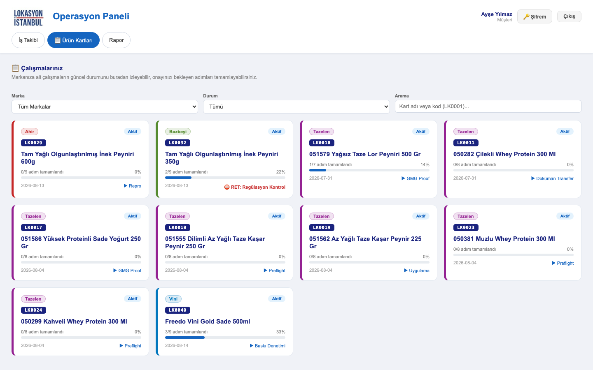
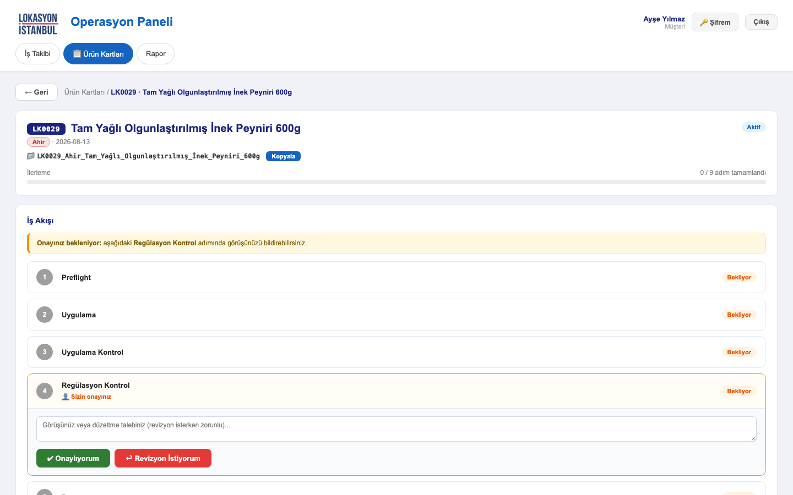
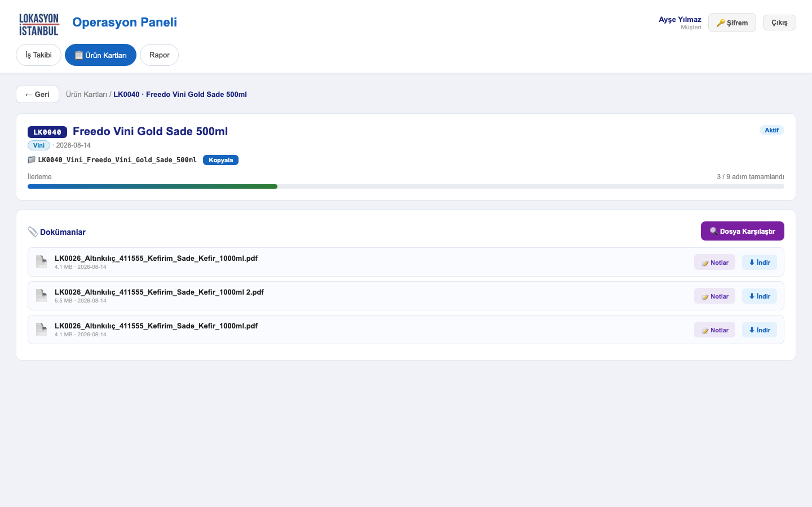
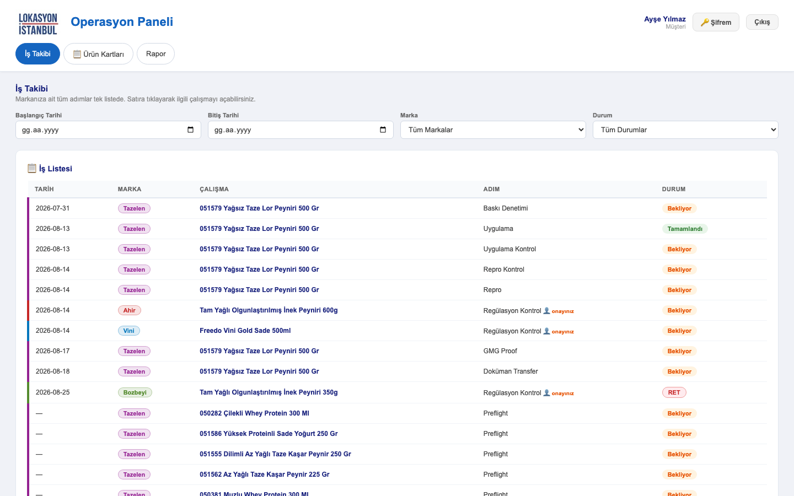
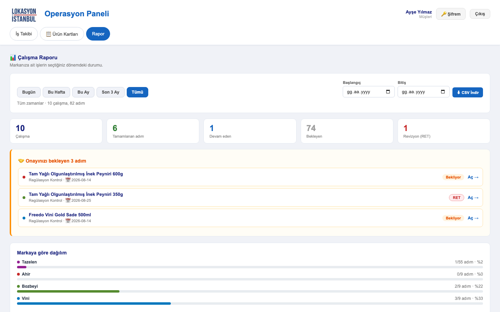

Panel, markanız için yürüttüğümüz ambalaj çalışmalarının hangi aşamada olduğunu canlı olarak gösterir. Onayınızın beklendiği adımlarda kararınızı doğrudan buradan iletirsiniz — e-posta trafiğine gerek kalmaz.
panel.lokasyonistanbul.com adresini açın.| İş Takibi | Bütün adımlar tek listede, tarihe göre sıralı. |
| Ürün Kartları | Her çalışma bir kart. Detay, dokümanlar ve onay burada. |
| Rapor | Seçtiğiniz dönemin özeti ve dışa aktarım. |
Her ürün bir karttır. Kartın üzerinde işin hangi aşamada olduğunu tek bakışta görürsünüz; ayrıntı için karta tıklarsınız.
LK0029) — çalışmanın dosya numarası. Bize yazarken bu kodu
belirtmeniz işi hızlandırır.LK0029 gibi kodu yazmanız
yeterli; liste anında süzülür.
Karta tıkladığınızda çalışmanın bütün adımlarını sırayla görürsünüz.
| Bekliyor | Henüz başlanmadı |
| Devam Ediyor | Üzerinde çalışılıyor |
| Tamamlandı | Bitti, sıradakine geçildi |
| RET | Revizyon istendi, iş geri döndü |
Panelin sizin için en önemli bölümü budur. Onayınıza açılan adımda iki düğme bulunur; hangisine bastığınız işin akışını belirler.
Çalışmaya yüklenen bütün PDF ve görseller kartın alt bölümündedir. İndirebilir ya da panelin içinde açıp doğrudan üzerine işaret koyabilirsiniz.
| 📝 Notlar | Dosyayı panelde açar. Düzeltme istediğiniz yeri iğneleyip yazabilirsiniz. |
| ⬇ İndir | Dosyayı bilgisayarınıza indirir. |

İki dosya arasındaki farkı gözle aramak yerine panele buldurabilirsiniz. Revizyon sonrası “istediğim düzeltme yapılmış mı?” sorusunun en hızlı cevabıdır.
1 2 3 görünüm değiştirir,
+ − yakınlaştırır, 0 sıfırlar, Esc kapatır.Kart kart dolaşmak yerine bütün çalışmalarınızın adımlarını tek listede, tarih sırasıyla görmek isterseniz bu bölümü kullanın.
— ile listenin sonunda toplanır; henüz
planlanmamış işlerdir.
Belirli bir dönemde kaç iş yürüdüğünü, kaçının tamamlandığını ve nerede beklemede olduğunu görmek için Rapor bölümünü kullanın.
| Özet kutuları | Çalışma sayısı ve adımların durum dağılımı. |
| Onayınızı bekleyenler | Dönemden bağımsızdır — aksiyon gerektirdiği için hep görünür. |
| Markaya göre dağılım | Birden fazla markanız varsa görünür. |
| Çalışmalar | Kart bazlı ilerleme, o anki adım ve son tarih. |

Bize bildirin, hesabınıza yeni bir geçici şifre tanımlayalım. Giriş yaptıktan sonra 🔑 Şifrem ile kendi şifrenizi belirleyin.
Doğru çalışıyor. Adım listesi bilgi amaçlıdır; yalnızca onayınıza açılan adım etkileşimlidir. O adım turuncu çerçeveyle ayrılır ve altında düğmeler bulunur. Onayınızı bekleyen bir adım yoksa iş akışının üstündeki bantta bunu belirten bir açıklama görürsünüz.
Panelden geri alınamaz. Bizimle iletişime geçin; çalışmayı geri açıp adımı yeniden onayınıza sunabiliriz.
Adım RET durumuna geçer, ilgili ekip üyesine notunuzla birlikte e-posta gider. Düzeltme yapıldığında adım yeniden onayınıza açılır.
Henüz planlanmamış adımlardır. Planlandıkça tarih atanır ve listede yukarı taşınırlar.
Önce Ürün Kartları'ndaki Durum filtresinin “Tümü” olduğundan emin olun — tamamlanmış ve arşivlenmiş kartlar varsayılan listede olmayabilir. Bulamazsanız bize kodu ile birlikte yazın.
Hesabınıza yalnızca belirlenen markalar tanımlanır. Eksik olduğunu düşünüyorsanız bize bildirin, tanımlayalım.
Hesaplar kişiye özeldir; onayı kimin verdiği adım notuna adıyla yazılır. Ekibinizden başka kişilerin de erişmesi gerekiyorsa onlar için ayrı hesap açalım — şifre paylaşmayın.
LK0029) belirtmeniz işi hızlandırır.